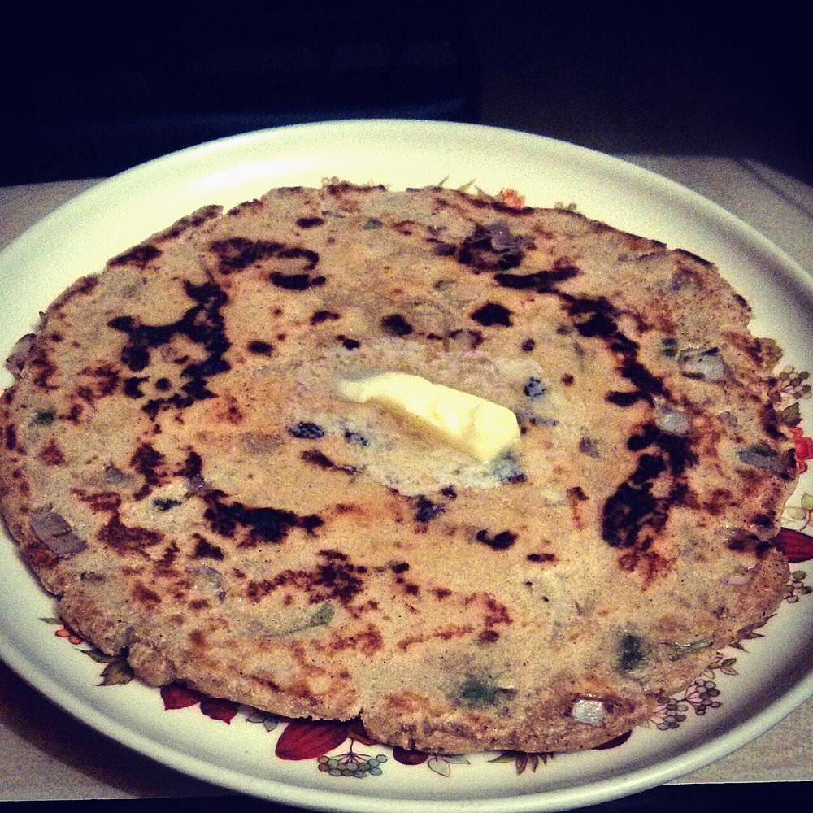

Thalipeeth
a savoury multigrain flatbread patted out by hand, spiced through and eaten with white butter

Prep20 min
Cook20 min
Total40 min
Serves4
Difficultymoderate
Contains: gluten, dairy
Ingredients
Quantities for 4.
- 120g Jowar Flour
- 60g Bajra Flour
- 60g Besan
- 30g Rice Flour
- 60g Attathe bhajani mix traditionally includes wheat
- 1 medium, very finely chopped Onion
- 3 tbsp, chopped Coriander Leaves
- 2, finely chopped Green Chilli
- 1 tsp, grated Ginger
- 4 cloves, crushed Garlicoptional
- 1 tsp Cumin Seeds
- 1 tsp Coriander Powder
- 1/2 tsp Turmeric
- 1 tsp Chilli Powder
- 1/2 tsp Ajwain
- 1 tbsp Sesameoptional
- 4 tbsp Groundnut Oilfor the tawa
- about 200ml, warm Water
- 2 tbsp, white butter if you can get it Butterthe traditional accompanimentoptional
- 150g, thick Yogurtto serveoptional
- 3/4 tsp Salt
Equipment
stovetop, tawa
Before you start
- Mix the flours together first, on their own, so the proportions are even before anything wet goes in.
- Have squares of parchment or banana leaf cut and ready — thalipeeth is patted out on the sheet, not rolled.
- The dough wants 10 minutes of rest before you shape it, so the coarse flours drink the water.
Method
- Combine the jowar, bajra, besan, rice flour and atta in a wide bowl with the salt.
- Add the onion, coriander, green chilli, ginger, garlic, cumin, coriander powder, turmeric, chilli powder, ajwain and sesame and rub everything through the flour.
- Pour in the warm water a little at a time and bring it together into a soft dough, softer than chapati dough and only just short of sticky.A stiff dough cracks at the edges the moment you pat it out. Err wet.
- Cover and rest the dough 10 minutes, then divide into 6 balls.
- Oil a square of parchment lightly, put a ball on it and pat it out with wet fingertips into a disc about 15cm across and 5mm thick.Keep dipping your fingers in water. Dry fingers drag and tear the dough.
- Poke a hole through the middle with your finger and two or three smaller ones around it.
- Invert the disc onto a hot tawa, peel away the parchment, and drizzle a teaspoon of oil into the centre hole and around the rim.The hole is not decorative — it lets oil and heat reach the middle so it cooks through.
- Cover and cook 3 minutes over medium heat, then flip and cook a further 3 minutes uncovered until both sides carry dark brown spots.
- Serve hot off the tawa with a lump of white butter melting on top and thick yogurt on the side.
Storage
Thalipeeth is best straight off the tawa. Cooked ones keep 1 day wrapped in a cloth at room temperature and reheat on a dry tawa for a minute a side; the raw dough keeps 2 days refrigerated.
Recipe v1.0.0, last updated 2026-07-31. Curated for Khaana and kept under version control.